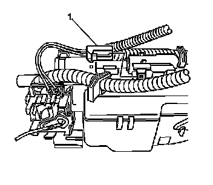
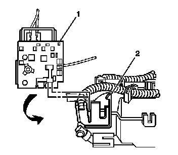

Fuel Level Sensor: Service and Repair
Primary Fuel Level Sensor Replacement
Removal Procedure
Caution: Refer to Gasoline/Gasoline Vapors Caution (Service Precautions) .
1. Remove the primary fuel tank module. Refer to Primary Fuel Tank Module Replacement (Primary Fuel Tank Module Replacement) .

2. Disconnect the fuel level sensor electrical connector (1) from the module.

3. Complete the following in order to remove the fuel level sensor (1) from the module assembly:
1. Pull the locking tab (2) away from the sensor (1).
2. Slide the sensor (1) away from the module assembly.
Installation Procedure
1. Complete the following in order to install the fuel level sensor (1) to the module assembly:
1. Align the tabs of the sensor (1) with the slots in the module assembly.
2. Slide the sensor (1) fully into position, ensure the locking tab (2) is engaged.
2. Connect the fuel level sensor electrical connector (1) to the module.
3. Install the primary fuel tank module. Refer to Primary Fuel Tank Module Replacement (Primary Fuel Tank Module Replacement) .